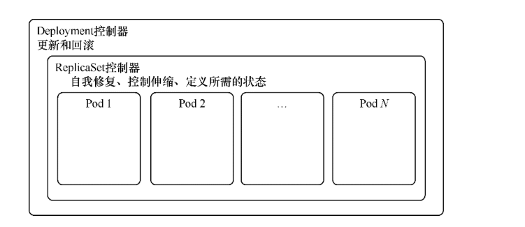
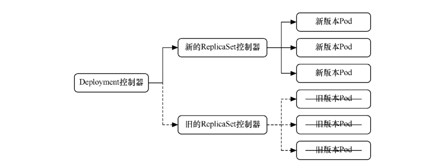
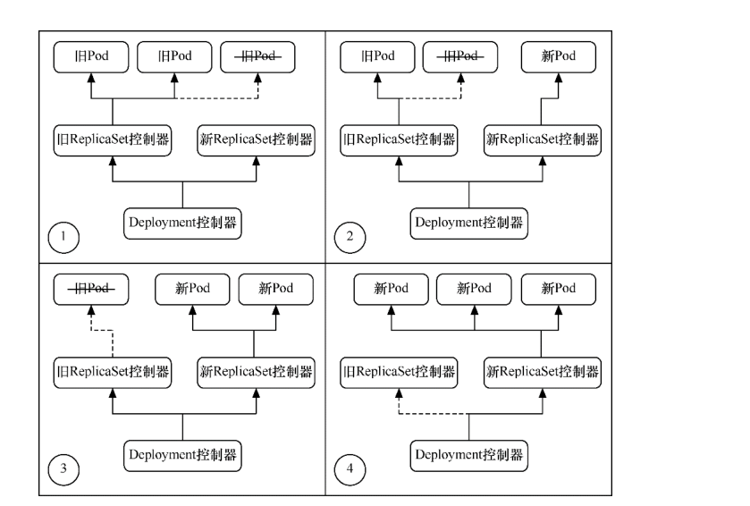
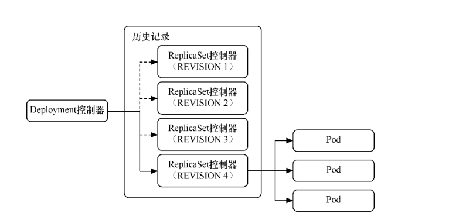

Contents
Deployment控制器¶
Deployment控制器可能是最常用的工作负载对象之一。
在使用Kubernetes时，通常要管理的是由多个相同Pod所组成的Pod集合，而不是单个Pod。
通过Deployment控制器，可以定义Pod模板，并设置相应控制参数以实现水平伸缩，以调节正在运行的相同Pod数。
Deployment控制器保证在集群中部署的Pod数量与配置中的Pod数量一致。如果Pod或主机出现故障，则会自动启用新的Pod进行补充。
Deployment控制器以ReplicaSet控制器为基础，是更高级的概念，增加了更灵活的生命周期管理功能，
例如，滚动更新和回滚
Deployment控制器与ReplicaSet控制器
Deployment控制器旨在简化Pod的生命周期管理。只需要简单更改Deployment控制器的配置文件，Kubernetes就会自动调节ReplicaSet控制器，管理应用程序不同版本之间的切换，还可以实现自动维护事件历史记录及自动回滚等功能。
ReplicaSet控制器基本上已不会直接使用，目前常规的Pod管理则直接使用更高一层的Deployment控制器。
1.Deployment控制器的基本操作¶
exampleDeploymentv1. yml的模板文件
apiVersion: apps/v1
kind: Deployment
metadata:
name: exampledeployment
spec:
replicas: 3
selector:
matchLabels:
example: deploymentfornginx
template:
metadata:
labels:
example: deploymentfornginx
spec:
containers:
- name: nginx
image: nginx:1.7.9
ports:
- containerPort: 80
该模板的含义如下。
apiVersion表示使用的API版本，apps/v1表示使用Kubernetes API的稳定版本。
kind表示要创建的资源对象，这里使用关键字Deployment。
metadata表示该资源对象的元数据。一个资源对象可拥有多个元数据，其中一项是name，它表示当前资源的命名。
spec表示该资源对象的具体设置。
replicas：表示在控制器下托管的Pod需要保持的副本数量。
selector/matchLabels：用于定义一个或多个自定义标签（label），其形式为键值对。它对Pod起筛选作用，会选 择与标签定义相匹配的Pod。这在后续章节会详细解说，因为它是必填字段，所以这里填写了一个示例值。
template：Pod模板
$ kubectl apply -f exampleDeploymentv1.yml --record
注意：这里一定要带参数–record，这样会把每次修改 Deployment控制器时所使用的命令记录到备注字段中，以便在查看 Deployment控制器变更历史或进行回滚时可以辨别每次修改的内容。
创建成功后，可通过以下命令查询当前运行的所有Deployment控制器。
$ kubectl get deployments
NAME READY UP-TO-DATE AVAILABLE AGE
exampledeployment 3/3 3 3 78s
$ kubectl get pods
NAME READY STATUS RESTARTS AGE
exampledeployment-656c6d8f4c-dxfpm 1/1 Running 0 2m2s
exampledeployment-656c6d8f4c-jt4sd 1/1 Running 0 2m2s
exampledeployment-656c6d8f4c-kvkjw 1/1 Running 0 2m2s
随着时间的推移，3个Pod均创建完，READY字段变成3/3，AVAILABLE字段变成3。
要查询更详细的信息（包括状态、生命周期和执行情况等），可以用kubectl describe命令
$ kubectl describe deployment exampledeployment
一般来说我们是根本不需要关注ReplicaSet控制器的，
可以用以下命令查看Deployment控制器对应的ReplicaSet控制器。
$ kubectl get replicasets
NAME DESIRED CURRENT READY AGE
exampledeployment-656c6d8f4c 3 3 3 4m
现在来做一些破坏性操作，用于验证Deployment控制器的稳定性。
将其中一个Pod直接删除
$ kubectl delete pod/exampledeployment-656c6d8f4c-dxfpm
$ kubectl get deployment
NAME READY UP-TO-DATE AVAILABLE AGE
exampledeployment 2/3 3 2 3m41s
$ kubectl get deployment
NAME READY UP-TO-DATE AVAILABLE AGE
exampledeployment 3/3 3 3 5m23s
此时用kubectl get pods命令查看，会发现已经启用了一个名为wt9fk的Pod来代替原先被删除的Pod
$ kubectl get pods
NAME READY STATUS RESTARTS AGE
exampledeployment-656c6d8f4c-jt4sd 1/1 Running 0 6m3s
exampledeployment-656c6d8f4c-kvkjw 1/1 Running 0 6m3s
exampledeployment-656c6d8f4c-z4grf 1/1 Running 0 106s
刚才只假定Pod被错误删除，现在假设某台Node机器出现异常死机。
先查看pod所在的node节点
$ kubectl get pods -o wide
NAME READY STATUS RESTARTS AGE IP NODE NOMINATED NODE READIN ESS GATES
exampledeployment-656c6d8f4c-jt4sd 1/1 Running 0 5m19s 10.0.19.7 gitee-k8s-w01 <none> <none>
exampledeployment-656c6d8f4c-kvkjw 1/1 Running 0 5m19s 10.0.19.42 gitee-k8s-w01 <none> <none>
exampledeployment-656c6d8f4c-z4grf 1/1 Running 0 62s 10.0.6.217 gitee-k8s-w27 <none> <none>
如果关机node物理机，node上的pod会在其他可用空间足够的node上重新创建。
Deployment控制器保证在集群中部署的Pod数量与配置中的Pod数量一致。如果Pod或主机出现故障，会自动启用新的Pod进行补充。
2.Deployment控制器的模板¶
yaml模板
apiVersion: apps/v1 #必填，版本号
kind: Depolyment #必填，资源类型
metadata: #必填，元数据
name: <name>-deploy #必填，资源名称
namespace: <namespace> #Pod所属的命名空间
labels: #自定义标签
- name: string #自定义标签名字<key: value>
spec: #必填，部署的详细定义
selector: #必填，标签选择
matchLabels: #必填，标签匹配
name: <name> #必填，通过此标签匹配对应pod<key: value>
replicas: <number> #必填，副本数量
minReadySeconds: int #新创建的Pod状态为Ready持续的时间
revisionHistoryLimit: int #保留的历史版本个数，默认是10
minAvailable: int #Pod自愿中断的场景中，至少要保证可用的Pod对象数量或比例，要阻止任何Pod对象发生自愿中断，可将其设置为100%。
maxUnavailable: int #Pod自愿中断的场景中，最多可转换为不可用状态的Pod对象数量或比例，0值意味着不允许Pod对象进行自愿中断；此字段与minAvailable互斥
strategy: #版本更新控制
type: RollingUpdate #更新策略，滚动更新（也可以是Recreate 重建更新）
rollingUpdate: #滚动更新配置
maxSurge: int #升级期间存在的总Pod对象数量最多不超过多少（百分比）
maxUnavailable: int #升级期间正常可用的Pod副本数（包括新旧版本）不低于多少（百分比）
template: #必填，应用容器模版定义
metadata:
labels:
name: <name> #必填，与上面matchLabels的标签相同
spec:
containers: #此处参考pod的containers
yaml示例：以grafana alert举例。指定容器监听端口，配置存活就绪检测，设置资源限制，挂载宿主机本机目录存储，
建议生产环境为资源添加limit和liveness
apiVersion: apps/v1
kind: Deployment
metadata:
namespace: test
name: grafana-alert-deploy
labels:
name: grafana-alert-deploy
spec:
replicas: 2
selector:
matchLabels:
name: grafanaAlert
template:
metadata:
labels:
name: grafanaAlert
spec:
containers:
- name: grafana-alert
image: grafana_alert:cm_v2
imagePullPolicy: IfNotPresent
command: ["python3.8","-u","-m","flask","run","-h","0.0.0.0","-p","9999"]
ports:
- containerPort: 9999
protocol: TCP
volumeMounts:
- name: grafana-alert-log
mountPath: /opt/grafanaAlert/log
readinessProbe:
tcpSocket:
port: 9999
livenessProbe:
tcpSocket:
port: 9999
resources:
limits:
cpu: 1
memory: 100Mi
requests:
cpu: 100m
memory: 10Mi
volumes:
- name: grafana-alert-log
hostPath:
path: /var/log/grafana-alert
type: Directory
affinity:
nodeAffinity:
requiredDuringSchedulingIgnoredDuringExecution:
nodeSelectorTerms:
- matchExpressions:
- key: role
operator: In
values:
- removable
dnsPolicy: ClusterFirst
restartPolicy: Always
还可以使用$ kubectl explain deployment命令详细查看Deployment控制器中资源支持的所有字段的详细说明。
如果想了解一个正在运行的Pod的配置，可以通过以下命令获取。
$ kubectl get deployment {deployment名称} -o yaml
示例
$ kubectl get deployment exampledeployment -o yaml
deployment 添加hosts
示例yml：
apiVersion: v1
kind: ReplicationController
metadata:
name: dp-rc
namespace: default
spec:
replicas: 1
selector:
name: dp-pod
template:
metadata:
labels:
name: dp-pod
spec:
hostAliases:
- ip: 192.168.176.247
hostnames:
- "dccas.finupgroup.com"
containers:
- name: dp
image: reg.k8s.dc.finupgroup.com/datacenter/dp:latest
imagePullPolicy: Always
ports:
- containerPort: 8080
3.Deployment控制器的伸缩¶
之前的示例中，设置的Pod副本数为3
$ kubectl get deployment
NAME READY UP-TO-DATE AVAILABLE AGE
exampledeployment 3/3 3 3 10m
假设现在有业务变更，需要将Pod副本数设置为5。我们先打开exampleDeploymentv1.yml模板文件，命令如下。
apiVersion: apps/v1
kind: Deployment
metadata:
name: exampledeployment
spec:
replicas: 5
selector:
.....
运行以下命令，应用模板文件。执行成功后的结果
$ kubectl apply -f exampleDeploymentv1.yml --record
接下来，会进入Pod创建过程。待Pod创建完成，通过$ kubectl get deployments命令查看状态。可以看到READY变成5/5，
$ kubectl get deployment
NAME READY UP-TO-DATE AVAILABLE AGE
exampledeployment 5/5 5 5 12m
再通过$ kubectl get pods -o wide命令查看，可以看到已经成功部署了另外两个Pod，它们均匀分布到其他有可用空间的node上
通过同样的办法，也可以将Deployment控制器的Pod副本数量减少，比如从现在的5个恢复到之前设置的3个。
$ kubectl apply -f exampleDeploymentv1.yml --record
提示：默认情况下，Pod不会调度到Master节点上。如果希望将Master节点也当作Node来使用，可以执行以下命令。
$ kubectl taint node master node-role.Kubernetes.io/master-
如果要恢复成只作为Master节点来使用，则可以执行以下命令。
$ kubectl taint node master node-
role.Kubernetes.io/master="":NoSchedule
一般情况下，不应将Master节点当作Node来使用。
3.1 资源伸缩命令¶
# 将名为 'foo' 的副本集伸缩到 3 副本
kubectl scale --replicas=3 rs/foo
# 将在 "foo.yaml" 中的特定资源伸缩到 3 个副本
kubectl scale --replicas=3 -f foo.yaml
# 如果名为 mysql 的 Deployment 的副本当前是 2，那么将它伸缩到 3
kubectl scale --current-replicas=2 --replicas=3 deployment/mysql
# 伸缩多个副本控制器
kubectl scale --replicas=5 rc/foo rc/bar rc/baz
4.Deployment控制器的更新¶
Deployment控制器有两种更新方式。
Recreate：所有现有的Pod都会在创建新的Pod之前被终止。
RollingUpdate：表示以滚动更新方式更新Pod，并可以通过maxUnavailable和maxSurge参数来控制滚动更新过程。
4.1 Recreate方式¶
在之前的示例中，我们指定Nginx镜像的版本号是1.7.9。
假设现在有业务需要，计划将所有副本的Nginx镜像版本升级到1.8.1。
我们先新建exampleDeploymentv2.yml模板文件。
apiVersion: apps/v1
kind: Deployment
metadata:
name: exampledeployment
spec:
replicas: 3
selector:
matchLabels:
example: deploymentfornginx
template:
metadata:
labels:
example: deploymentfornginx
spec:
containers:
- name: nginx
image: nginx:1.8.1
ports:
- containerPort: 80
strategy:
type: Recreate
$ kubectl apply -f exampleDeploymentv2.yml --record
deployment.apps/exampledeployment configured
$ kubectl get deployment
NAME READY UP-TO-DATE AVAILABLE AGE
exampledeployment 0/3 0 0 34m
此时再执行$ kubectl get deployments命令，可以看到READY为0/3，AVAILABLE为0，这表示此Deployment控制器下面的所有
Pod都暂时不可用。而UP-TO-DATE为0，表示没有任何一个Pod完成更新.
此时再通过$ kubectl get pods -o wide命令进行查看，可以看到原先的3个Pod正在终止
通过$ kubectl describe pods {Pod名称}命令查看Pod的详细信息，可以发现镜像版本已更
新为1.8.1
$ kubectl describe pod/exampledeployment-5974df6f9d-2j2kh
Name: exampledeployment-5974df6f9d-2j2kh
Namespace: default
Priority: 0
Node: gitee-k8s-w27/192.168.1.22
Start Time: Mon, 11 Apr 2022 18:46:28 +0800
Labels: example=deploymentfornginx
pod-template-hash=5974df6f9d
Annotations: <none>
Status: Running
IP: 10.0.6.225
IPs:
IP: 10.0.6.225
Controlled By: ReplicaSet/exampledeployment-5974df6f9d
Containers:
nginx:
Container ID: containerd://38c425a10da4af359ff3a8bef9b44319c9f347cfac326cb0bb4af7fda0f4a0d1
Image: nginx:1.8.1
通过命令$ kubectl get rs -o wide查看ReplicaSet控制器的变化情况。可以看到1.7.9的那个版本已停止使用
$ kubectl get rs -o wide
NAME DESIRED CURRENT READY AGE CONTAINERS IMAGES SELECTOR
exampledeployment-5974df6f9d 3 3 3 4m1s nginx nginx:1.8.1 example=deploymentfornginx,pod-template-hash=5974df6f9d
exampledeployment-656c6d8f4c 0 0 0 38m nginx nginx:1.7.9 example=deploymentfornginx,pod-template-hash=656c6d8f4c
可以看到这种更新方式相当直接，会直接删除当前Deployment制器下所有的Pod，即删除旧的ReplicaSet控制器下的所有Pod，只保 留旧的ReplicaSet控制器的定义，但不再投入使用，之后新建更新后的ReplicaSet控制器及Pod。
Recreate更新方式
但在实际使用过程中，一般我们会用这些Pod来提供长期稳定且不 间断的服务，很少有终止所有Pod再等候全部重新创建来提供服务的情况。
如果要让Pod能提供不间断的服务，平滑升级，则需要使用RollingUpdate更新方式。
4.2 RollingUpdate方式¶
RollingUpdate其实在人为不干预的情况下，属于一种蓝绿发布模式，
即：新旧的版本共存，有新版发布也有旧版发布，访问部分用户旧版，部分用户新版本。
Deployment控制器的另一种更新方式就是RollingUpdate（滚动更新）。
这种更新方式更实用，是一种比较平滑的升级方式，不会中断整个Pod集群提供的服务。在具体介绍滚动更新之前，需要先了解滚动 更新策略使用的两个参数。
maxUnavailable：表示在更新过程中能够进入不可用状态的Pod 的最大值或相对于总副本数的最大百分比。
maxSurge：表示能够额外创建的Pod数或相对于总副本数的百分比。
假设现在有业务需要，计划将所有副本的Nginx镜像版本升级到1.9.0，但这一次要求平滑过渡，服务不能中断。
我们先新建exampleDeploymentv3.yml模板文件。
apiVersion: apps/v1
kind: Deployment
metadata:
name: exampledeployment
spec:
replicas: 3
selector:
matchLabels:
example: deploymentfornginx
template:
metadata:
labels:
example: deploymentfornginx
spec:
containers:
- name: nginx
image: nginx:1.9.0
ports:
- containerPort: 80
strategy:
type: RollingUpdate
rollingUpdate:
maxSurge: 0
maxUnavailable: 1
运行以下命令，应用模板文件。
$ kubectl apply -f exampleDeploymentv3.yml --record
在不同时间点执行$ kubectl get deployments命令，会得到不同的结果
在不同时间点执行$ kubectl get pods -o wide命令，会得到不同的结果
可以看到，在执行滚动更新时，因为设置了maxUnavailable=1，表示最多只允许1个Pod不可用，所以会先终止1个Pod，使另外两个Pod处于运行状态。
AVAILABLE为2，表示有两个Pod可用（其中有1个是新Pod）；
UP-TO-DATE为2，表示有两个更新的Pod。
由于设置了maxSurge=0，表示最多创建0个额外的Pod副本，更新过程中有1个正在创建的Pod以及两个正在运行的Pod（正好为3个），因此符合3个副本与0个额外副本的设置。此时READY为2/3，AVAILABLE为2，表示有两个旧Pod可用；UP-TO-DATE为1，表示有1个更新的Pod。
最后，全部新Pod创建成功，代替旧Pod提供服务。整个升级过程如图所示，它保持平滑过渡，逐步替代，持续让Pod提供稳定服务。
RollingUpdate方式
最后升级后的deployment内容如下：
$ kubectl get deployment -o wide
NAME READY UP-TO-DATE AVAILABLE AGE CONTAINERS IMAGES SELECTOR
exampledeployment 3/3 3 3 49m nginx nginx:1.9.0 example=deploymentfornginx
$ kubectl get rs
NAME DESIRED CURRENT READY AGE
exampledeployment-556b4d9fc4 3 3 3 14h
exampledeployment-5974df6f9d 0 0 0 14h
exampledeployment-656c6d8f4c 0 0 0 15h
4.3 更新的暂停与恢复¶
目前无论是直接更新还是滚动更新，都会一直持续更新，直到结 束，但如果更新后的版本有问题怎么办？是否可以只尝试发布一个最 新的Pod，待这个Pod验证无误后，再更新剩余的Pod？
答案是肯定的，Kubernetes提供的暂停与恢复更新功能可以实现上述功能。
假设现在有业务需要，计划将所有副本的Nginx镜像版本升级到1.9.1，这一次不仅要求平滑过渡，还要求进行金丝雀发布，即确认其 中一个Pod没有问题后再进行剩余的更新。
即：人工干预进行更新暂停，金丝雀发布，出现问题及时回滚。
暂停与恢复也可以用yml文件来实现，但相对比较复杂，这里用比较简单的命令进行说明。暂停与恢复的命令如下所示。
$ kubectl rollout pause deploy {Deployment名称}
$ kubectl rollout resume deploy {Deployment名称}
以之前示例中创建的Deployment控制器为例，连续执行以下命令。
$ kubectl set image deploy exampledeployment nginx=nginx:1.9.1 --record
# 暂停更新
$ kubectl rollout pause deploy exampledeployment
该命令会升级exampledeployment中的Nginx版本，但紧接着执行的暂停命令会使更新第1个Pod的时候就停止后续操作。
通过$ kubectl get pods -o wide命令，可以看到如下结果，原先的3个版本为1.9.0的Pod被终止了1个，然后启动了1个新的版本为1.9.1的Pod。更新完1个Pod后就停止后续更新了
通过$ kubectl get deployments命令进行查看，可以发现READY和AVAILABLE都是3，但是最新版本的UP-TO-DATE只有1
此时只更新了一个pod为最新的版本。
$ kubectl get deployment
NAME READY UP-TO-DATE AVAILABLE AGE
exampledeployment 3/3 1 3 15h
此时可以验证刚才创建的新版本Pod，直到验证没有问题后，就可以结束暂停了，让剩余的Pod继续更新为最新版，使用的命令如下。
# 恢复更新
$ kubectl rollout resume deploy exampledeployment
此时会继续更新剩余两个Pod。因为配置的是滚动更新，所以不同时段的结果和上一节一致，可以看到所有的Pod都更新为最新版。
[root@ci-base ~]# kubectl get deployment -o wide -w
NAME READY UP-TO-DATE AVAILABLE AGE CONTAINERS IMAGES SELECTOR
exampledeployment 2/3 3 2 15h nginx nginx:1.9.1 example=deploymentfornginx
4.4 Deployment控制器的回滚¶
如果更新之后，发现新版本的Pod有严重问题，需要回滚到之前版本，则可以先使用以下命令查看历史变更记录。
$ kubectl rollout history deployment {Deployment名称}
本例中的命令如下。
$ kubectl rollout history deployment exampledeployment
deployment.apps/exampledeployment
REVISION CHANGE-CAUSE
1 kubectl apply --filename=exampleDeploymentv1.yml --record=true
2 kubectl apply --filename=exampleDeploymentv2.yml --record=true
3 kubectl apply --filename=exampleDeploymentv3.yml --record=true
4 kubectl set image deploy exampledeployment nginx=nginx:1.9.1 --record=true
提示：前面提示过一定要带参数–record，只有这样才会记录每次修改Deployment控制器时所使用的命令，记录的位置就是现在我 们看到的CHANGE-CAUSE字段。如果没有带–record，CHANGE-CAUSE记录将为。
保存历史记录的本质是保留每次修改所创建的ReplicaSet控制器，而回滚的本质其实是切换到对应版本的ReplicaSet控制器。 Deployment控制器是通过ReplicaSet控制器来管理Pod的。
保存历史记录的本质
可以通过以下命令查看这个Deployment控制器下所有的ReplicaSet控制器。
$ kubectl get rs -o wide
NAME DESIRED CURRENT READY AGE CONTAINERS IMAGES SELECTOR
exampledeployment-556b4d9fc4 0 0 0 14h nginx nginx:1.9.0 example=deploymentfornginx,pod-template-hash=556b4d9fc4
exampledeployment-5974df6f9d 0 0 0 14h nginx nginx:1.8.1 example=deploymentfornginx,pod-template-hash=5974df6f9d
exampledeployment-656c6d8f4c 0 0 0 15h nginx nginx:1.7.9 example=deploymentfornginx,pod-template-hash=656c6d8f4c
exampledeployment-89899ddf7 3 3 3 10m nginx nginx:1.9.1 example=deploymentfornginx,pod-template-hash=89899ddf7
可以看到目前使用的是1.9.1版本的ReplicaSet控制器。
回滚命令如下。
$ kubectl rollout undo deployment {Deployment名称} --to-revision={REVISION编号}
假设现在我们想退回到CHANGE-CAUSE “kubectl apply –filename=example Deploymentv2.yml –record=true”这个版本，由于其版本编号为2，因此可以使用以下命令进行回滚。
$ kubectl rollout undo deployment exampledeployment --to-revision=2
deployment.apps/exampledeployment rolled back
使用$ kubectl rollout history deployment exampledeployment命令再次查看历史记录，可以发现REVISION
2 已经消失，取而代之的是新加的REVISION 5，
$ kubectl rollout history deployment exampledeployment
deployment.apps/exampledeployment
REVISION CHANGE-CAUSE
1 kubectl apply --filename=exampleDeploymentv1.yml --record=true
3 kubectl apply --filename=exampleDeploymentv3.yml --record=true
4 kubectl set image deploy exampledeployment nginx=nginx:1.9.1 --record=true
5 kubectl apply --filename=exampleDeploymentv2.yml --record=true
之前提到回滚的本质其实是切换到对应版本的ReplicaSet控制器，可以通过 kubectl get rs -o wide命令来再次查看 ReplicaSet控制器的启用情况。
$ kubectl get rs -o wide
NAME DESIRED CURRENT READY AGE CONTAINERS IMAGES SELECTOR
exampledeployment-556b4d9fc4 0 0 0 14h nginx nginx:1.9.0 example=deploymentfornginx,pod-template-hash=556b4d9fc4
exampledeployment-5974df6f9d 3 3 3 14h nginx nginx:1.8.1 example=deploymentfornginx,pod-template-hash=5974df6f9d
exampledeployment-656c6d8f4c 0 0 0 15h nginx nginx:1.7.9 example=deploymentfornginx,pod-template-hash=656c6d8f4c
exampledeployment-89899ddf7 0 0 0 14m nginx nginx:1.9.1 example=deploymentfornginx,pod-template-hash=89899ddf7
可以发现，1.9.1版本的ReplicaSet控制器目前已没有Pod副本，之前1.8.1版本的ReplicaSet控制器再度启用并且拥有3个Pod副本。